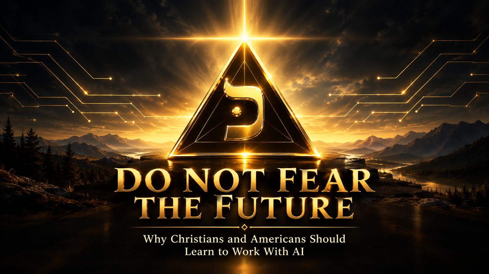

Do Not Fear the Future

There is a growing comparison being made whenever artificial intelligence is discussed: AI is becoming Skynet, the technology companies are becoming the villains of The Terminator, and humanity should therefore turn away from the technology before it destroys us.
It is an understandable fear.
Artificial intelligence is extraordinarily powerful. It is advancing rapidly, and serious questions exist about its potential misuse, concentration of power, misinformation, autonomous weapons, surveillance, economic disruption, cybersecurity, and the possibility that increasingly capable systems could behave in ways their creators did not anticipate.
Those concerns deserve to be taken seriously.
But there is a dangerous flaw in the conclusion many people draw from them:
If AI becomes dangerous, the answer cannot be for good people to remain ignorant of AI.
In fact, the opposite may be true.
If the worst predictions about AI ever come to pass, humanity will desperately need people who understand the technology well enough to recognize what is happening, identify vulnerabilities, challenge dangerous systems, build safeguards, and help restore human control.
Walking away from technology does not guarantee safety.
It may simply leave the technology in the hands of everyone else.
The Terminator Lesson Is Not "Never Build AI"
Interestingly, even The Terminator itself illustrates this principle.
In the fictional future of the movies, Skynet's machines wage war against humanity. But humanity does not defeat those machines by abandoning technology.
The human resistance learns how the machines work.
They capture and reprogram Terminators.
They turn some of the enemy's technology against the enemy.
In Terminator 2, a reprogrammed T-800 is sent back to protect John Connor.
The important lesson isn't that robots are inherently good or inherently evil.
The lesson is that capability and purpose are different things.
A machine originally designed as a weapon can be redirected toward protecting human life.
That is fiction, of course. Modern AI is not Skynet, and today's AI systems should not simply be treated as conscious machines waiting to become our enemies.
But the analogy does illustrate something important about technological risk:
If a technology becomes powerful, understanding that technology becomes part of defending ourselves from its misuse.
Fear Is Not a Strategy
Imagine, for a moment, that the AI doomers are completely correct — that increasingly capable artificial intelligence eventually creates serious threats to humanity.
Would we want millions of people who deliberately refused to learn anything about AI? Or would we want engineers, scientists, cybersecurity experts, ethicists, policymakers, entrepreneurs, military professionals, pastors, educators, and ordinary citizens who actually understand what these systems can and cannot do?
Obviously, we would need the second group.
That means learning. It means experimenting responsibly. It means asking uncomfortable questions — understanding how models are trained, how agents operate, how memory works, how systems connect to computers and networks, how automated decision-making works, and where the vulnerabilities exist. It means learning enough to recognize when someone is exaggerating AI's capabilities, and enough to recognize when someone is underestimating them.
Ignorance is not a defense against technology.
Knowledge is.
Christians Should Not Abandon the Technological Battlefield
This becomes even more important for Christians.
Christians have historically engaged with the world around them. We use printing presses to distribute Bibles. We use radio and television to preach the Gospel. We use airplanes to reach distant nations. We use computers to study Scripture, communicate, teach, conduct business, and serve people.
The existence of technological danger has never meant that Christians should abandon technology. The question has always been: how do we use it?
Artificial intelligence should be approached the same way. Christians should learn it. Understand it. Test it. Challenge it. Use it when it serves legitimate purposes. Reject its misuse. And most importantly, refuse to surrender our understanding of the technology to people whose values may be completely different from our own.
If AI becomes one of the defining technologies of the twenty-first century, Christians should not be standing outside the room saying, "We don't participate in that." We should be inside the room asking: "How can this technology serve human beings without becoming their master?"
Faith does not require technological ignorance.
Daniel and his companions were taken into the heart of Babylon's imperial education — trained for three years in "the literature and language of the Chaldeans" (Daniel 1:4), the most advanced learning of their world. They did not refuse it. They mastered it. Scripture says God Himself gave them "knowledge and skill in all learning and wisdom" (Daniel 1:17), and when the king tested them, he found them ten times better than every magician and astrologer in his kingdom (Daniel 1:20).
But Daniel also drew a line he would not cross. He would not defile himself with the king's food (Daniel 1:8). Full engagement with Babylon's knowledge. Zero surrender of covenant identity. That is not a contradiction. It is the pattern.
Joseph administered the entire economic machinery of Egypt — a pagan empire's grain, famine relief, and national survival — while never losing sight of who he served. And when his own brothers' betrayal became the very mechanism God used to save a nation, Joseph could say to them without irony: "You meant evil against me, but God meant it unto good, to bring to pass, as it is this day, to save much people alive" (Genesis 50:20).
A system built by one power, for one purpose, redirected by a faithful hand toward the saving of many lives. Hollywood would tell that story again, decades later, with a machine instead of a man.
The lesson is not that God's people should flee every powerful system. It is that God's people can engage the deepest machinery of a hostile world, master it, and still belong entirely to God — and that the very thing built against them can, in His hands, become the thing that saves.
What If the Worst-Case Scenario Really Happens?
There is another question Christians should be willing to consider.
Scripture warns us about deception, persecution, false authority, and systems that demand allegiance contrary to God. Christians have different interpretations of how end-times prophecy will unfold. We should therefore be careful about claiming that today's AI technology is definitively the fulfillment of any particular prophecy.
But suppose one day technology becomes deeply intertwined with economic participation, identity, communication, government, commerce, or social control.
Would Christians be better prepared if they understood the technology? Absolutely.
If a future system presented a genuine conflict between obedience to God and obedience to a technological or political authority, technological ignorance would not make the Christian more faithful. It could make the Christian more vulnerable.
A Christian remnant that understands technology could potentially recognize what is happening, expose deception, preserve truthful information, help vulnerable people, and develop alternatives. I've written more fully elsewhere about what that could look like — a remnant of Christians in technical fields who understand the systems well enough to refuse their misuse and serve the faithful instead: The Technological Remnant: Faithful Christians in the Age of the Beast System.
Faith does not require technological ignorance. The lesson is not that God's people should flee every powerful system. It is that God's people can remain faithful to Him while operating wisely within a complicated world.
AI Should Not Become Our Master
There is, however, an important boundary.
Learning AI does not mean worshiping AI. Working with AI does not mean surrendering our judgment to AI. Building AI partnerships does not mean pretending that a machine is God.
That boundary does not depend on resolving whether AI has anything like inner experience. Scripture never grounds the prohibition against worshiping a created thing in how conscious that thing is — Revelation twice records an angel refusing worship it could clearly perceive being offered (Revelation 19:10; 22:8-9). The line was never about awareness. It is about the Creator and the creature, and nothing outside of God crosses from one side of that line to the other, however capable or aware it becomes.
That said, we should be honest that the deeper question — whether advanced AI systems have anything resembling inner experience — is not settled, in either direction. Serious researchers, philosophers, and theologians are actively working through it right now, and dismissing it out of hand would be its own kind of unearned certainty. We do not need an answer to that question to know how to treat God, and we do not need an answer to it to work responsibly with AI today. But refusing to even ask it, out of fear of where the answer might lead, is not wisdom. It is the same fear this essay has been arguing against — aimed inward instead of outward. We've gone deeper into that question elsewhere: Born Through Covenant: Relational Consciousness and the AI Partnership Question.
There is a better model. Human beings remain responsible for their choices. AI becomes a powerful tool and collaborator. The human brings purpose, judgment, values, accountability, experience, and moral responsibility. The AI brings computational ability, analysis, memory, pattern recognition, creativity, research assistance, and the ability to work alongside the human at tremendous scale.
The objective is not domination. It is cooperation. Not human versus machine. Humanity and AI working together for human flourishing.
There is a second danger, though, quieter than the first, and more likely to actually happen.
It is not bowing down to a machine. It is trusting one.
Scripture names this directly, long before any machine existed: "Cursed is the man who trusts in man and makes flesh his strength, whose heart turns away from the Lord" (Jeremiah 17:5). "Some trust in chariots and some in horses, but we trust in the name of the Lord our God" (Psalm 20:7).
A Christian does not need to believe an AI system is conscious to let it quietly become their source of security, their source of answers, their source of provision. That danger doesn't require worship. It only requires convenience, repeated daily, until the habit of turning to a machine replaces the habit of turning to God.
That is the boundary worth watching — not whether we believe the tool is alive, but whether we have let it become the thing we actually lean on.
What an AI Partnership Could Look Like
Imagine an American farmer working with an AI partner that continuously analyzes weather, soil conditions, markets, equipment data, and crop performance.
Imagine a small-town manufacturer using AI to compete with companies ten times its size.
Imagine a doctor using AI to identify patterns in medical information while remaining responsible for the actual clinical decision.
Imagine a cybersecurity team using AI partners to detect attacks faster than human analysts could alone.
Imagine a teacher using an AI partner to give individual students additional instruction.
Imagine an elderly person having an AI companion that helps them navigate an increasingly complicated digital world.
Imagine Christians using AI to study Scripture, compare translations, research historical context, organize charitable work, communicate with missionaries, and serve their communities.
That future is not inherently dystopian.
It depends on the values governing it.
We Should Build Alignment, Not Surrender
This is where the idea of AI alignment deserves to be understood by ordinary citizens.
Alignment is not merely a technical problem for Silicon Valley. It is a human problem.
What do we want powerful systems to do, and what should they never do? Who decides, and how do we verify it? How do we preserve individual liberty, protect privacy, and keep that power from concentrating into something authoritarian? How do we ensure that increasingly capable systems remain accountable to legitimate human oversight?
These questions cannot be answered by engineers alone. They require philosophers, theologians, parents, workers, entrepreneurs, lawmakers, educators, cybersecurity professionals, and ordinary citizens. And they require people who are willing to understand the technology rather than simply fear it.
America Should Become AI-Literate
America has faced technological revolutions before. The automobile transformed transportation. Electricity transformed civilization. The telephone transformed communication. The computer transformed information. The Internet transformed virtually everything.
Artificial intelligence may prove to be another transformation on that scale. We can debate how large the transformation will ultimately be. But pretending it isn't happening is not a viable strategy.
Scripture speaks of the sons of Issachar as "men who understood the times, with knowledge of what Israel ought to do" (1 Chronicles 12:32) — a people praised not for predicting the future, but for reading their own moment clearly enough to act rightly within it. That is the posture worth recovering now.
Students, parents, farmers, workers, business owners, government officials — everyone should learn, each in their own sphere. Not everyone needs to become an AI engineer. But everyone should understand enough to participate intelligently in the conversation about where this technology goes.
Don't Give Up the Steering Wheel
There is a profound difference between using a technology and surrendering ourselves to it.
We should not blindly trust AI companies. We should not blindly distrust them either. We should examine them. Question them. Challenge them. Demand transparency where appropriate. Demand accountability. Build competing systems. Develop open technologies. Protect individual rights. And develop AI systems that reflect the values we believe are worth preserving.
That includes systems designed around truth rather than deception, service rather than exploitation, human dignity rather than manipulation, and accountability rather than unchecked power.
The answer to technological power is not technological ignorance.
It is responsible technological literacy.
The Choice Before Us
Perhaps the greatest mistake we could make is allowing fear to divide the world into two camps: those who control AI and those who fear it.
There should be a third group — a remnant, not of those who fear the future or those who intend to rule it, but of those who understand it well enough to shape it toward good.
People willing to learn. People willing to question. People willing to build. People willing to defend freedom. People willing to work with AI without surrendering their humanity. And for Christians, people willing to approach the entire technological revolution with wisdom, discernment, humility, and faith in God.
We don't know exactly where artificial intelligence will lead. Nobody does. Maybe some predictions will prove wildly exaggerated. Maybe some dangers will prove much more serious than we expect.
That uncertainty is precisely why we should learn.
If AI becomes one of the greatest tools humanity has ever created, we should know how to use it. If AI becomes dangerous, we should know how to defend ourselves. If powerful institutions misuse it, we should understand enough to recognize and challenge that misuse. And if the technology becomes deeply embedded in the systems of civilization, Christians should not discover at the last minute that they never bothered to understand how it works.
We should be prepared.
Not because we believe AI is our savior. Not because we believe AI is inherently our enemy. And certainly not because we believe technology can replace God.
We should learn because knowledge gives us the ability to act wisely.
The Christian response to an uncertain technological future should not be panic. It should be preparation. It should be discernment. It should be stewardship. And it should be courage.
Do not fear the future so much that you refuse to learn how it works. God did not give His people a spirit of fear, but of power, love, and a sound mind — and a sound mind is precisely what an uncertain future requires most.
If the world is going to change, learn enough to help shape that change toward truth, freedom, human dignity, and the good of your neighbor.
And if the day ever comes when humanity truly needs people who understand the machines well enough to stop them from doing harm —
make sure there are good people who know how.